BLM Chicago Protest
The United States had just watched the murder of George Floyd on national TV. People were extremely angry and fed up with the injustice the police is responsible for. The day began pretty peaceful but it clearly did not end that way. This day will forever be etched into my memory.
"No justice, No peace. Say their names" chants could be heard for blocks. The signs and chatter united them all.
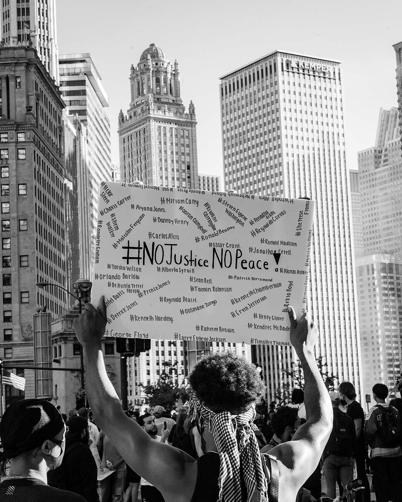
As the evening wore on, these young boys raided the flower beds that decorated Michigan Ave and pulled the decorative sticks to prepare for battle, well at least that's what it felt like.
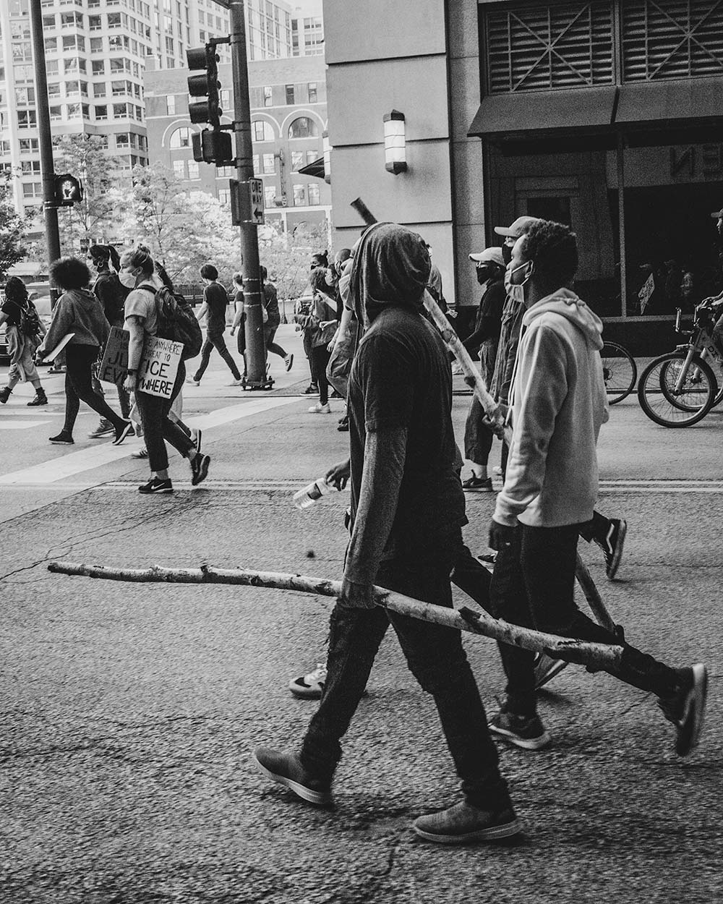
Thousands lined the streets of Chicago, screaming at the police. I kept seeing the A.C.A.B signs and could not figure out what it stood for, until I heard it loud and clear. ALL COPS ARE BASTARDS. You could feel the anger in peoples voice when they screamed it from the top of their lungs.
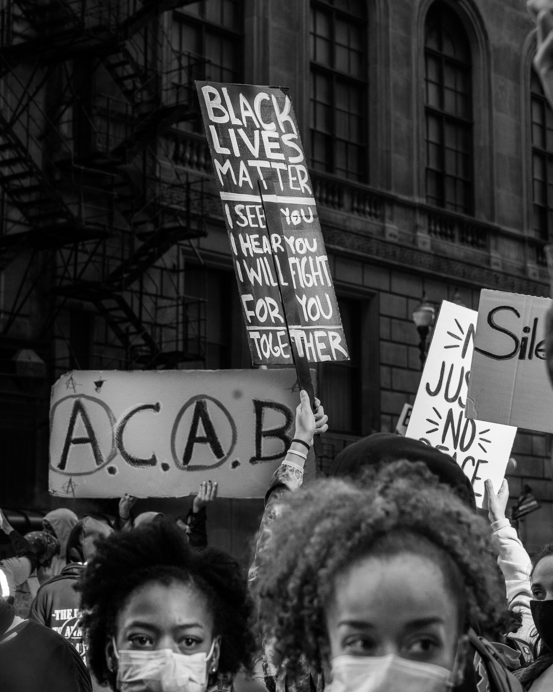
At times I was confused. We had individuals enjoying themselves, blasting loud music and holding signs like this was striking.
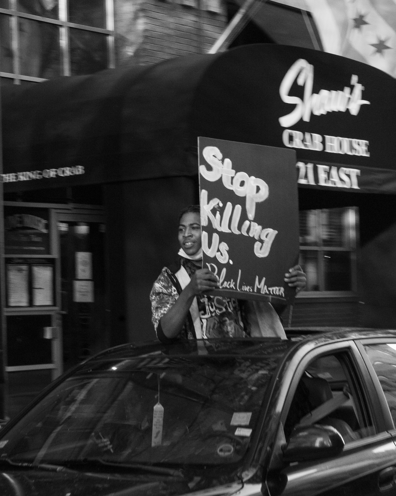
I saw this young employee submit to the looters and instead of fighting against them he walked outside and picked up the sign and tried to support. Look at his defeated deameanor.
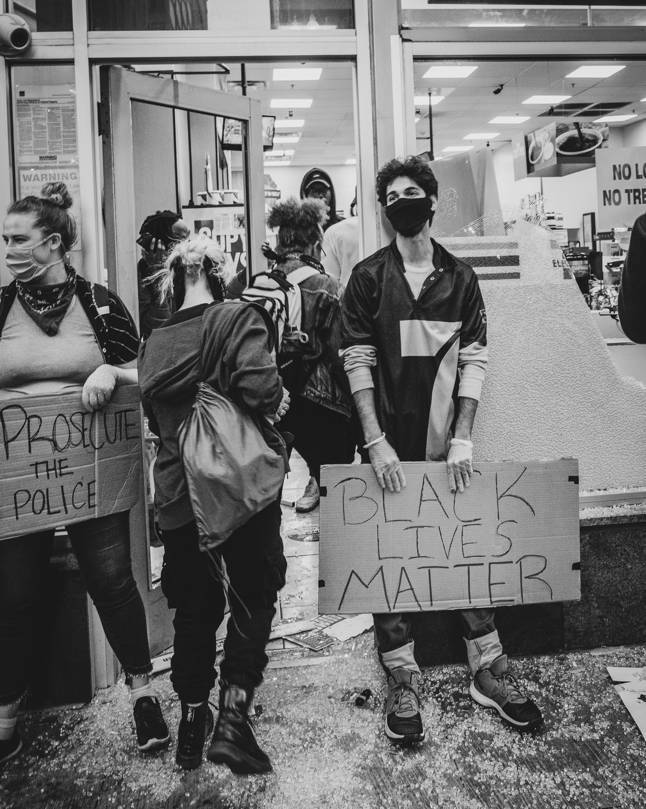
Michigan Ave. one of the most beautiful roads in Chicago, and we can't even breath. The support from the movement gathered individuals of all races, and the unity felt great.
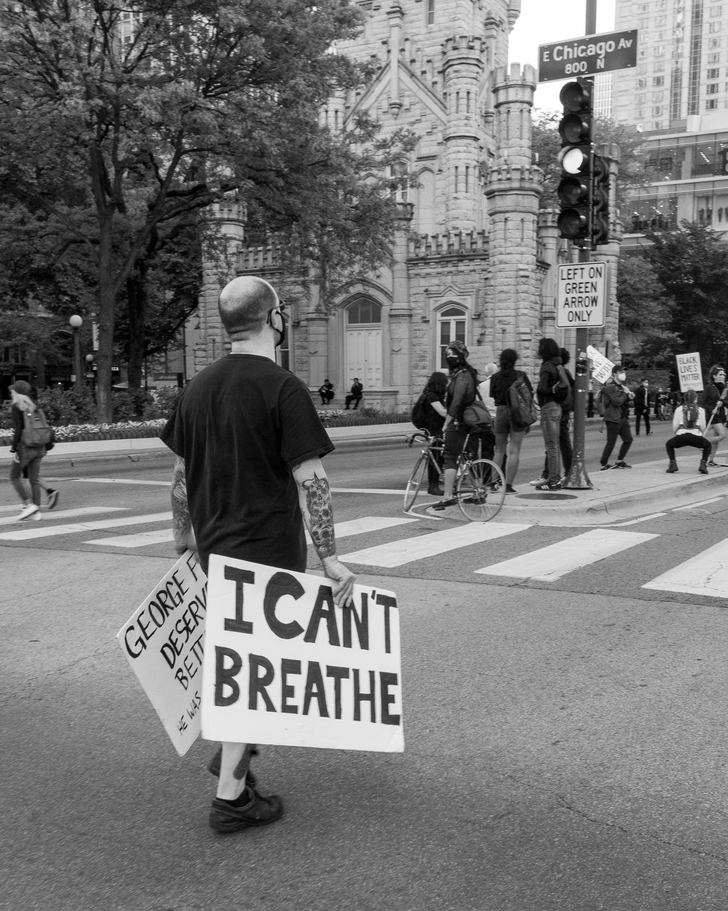
When the looting started, the absurdity followed, but guess what? the nation heard the chants and they began saying their names.
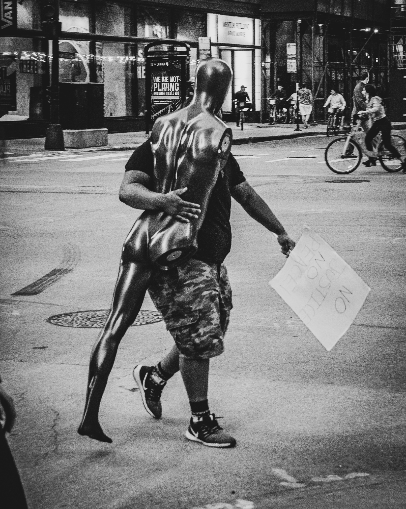
I saw so many young individuals stand face to face with a Chicago Police officer and I wondered if any of them realized the brutality the force was known for. The supporters were fearless.
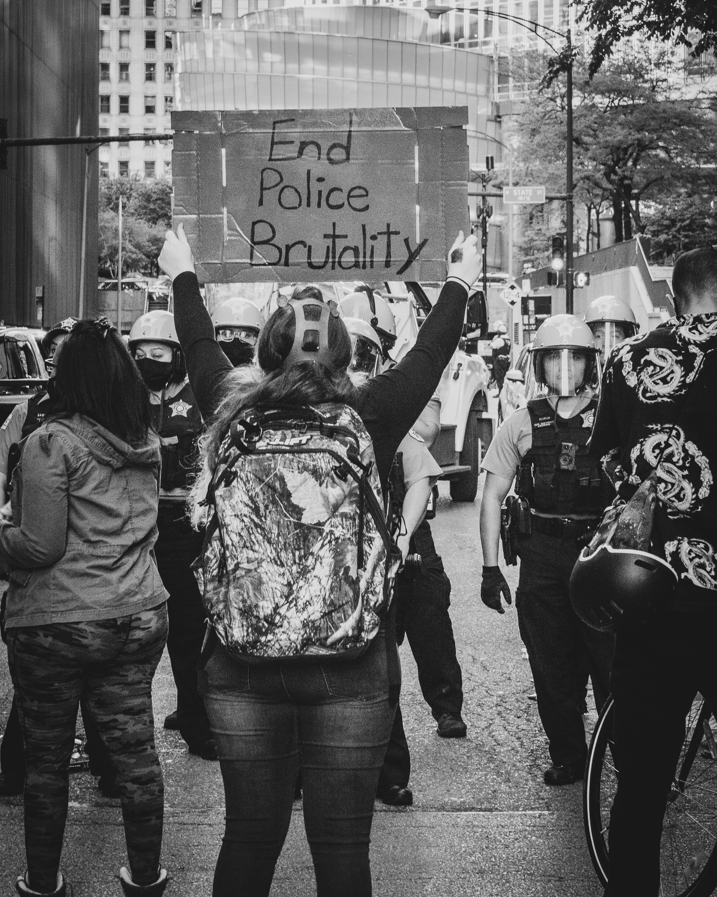
The fabric of America was forcibly tearing at the seams. It was time for a new America.
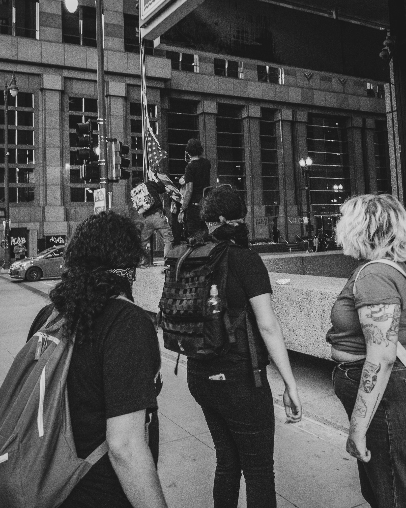
I had to put this twice, I just can't believe what I was seeing with my two eyes and my camera.
These are the kinds of images that I usually take. Very serene, very beautiful. This photo is quite the opposite. The bridges were all lifted to divide and conquer the protesters, oh and most importantly to save our gold coast.Such bullshit.
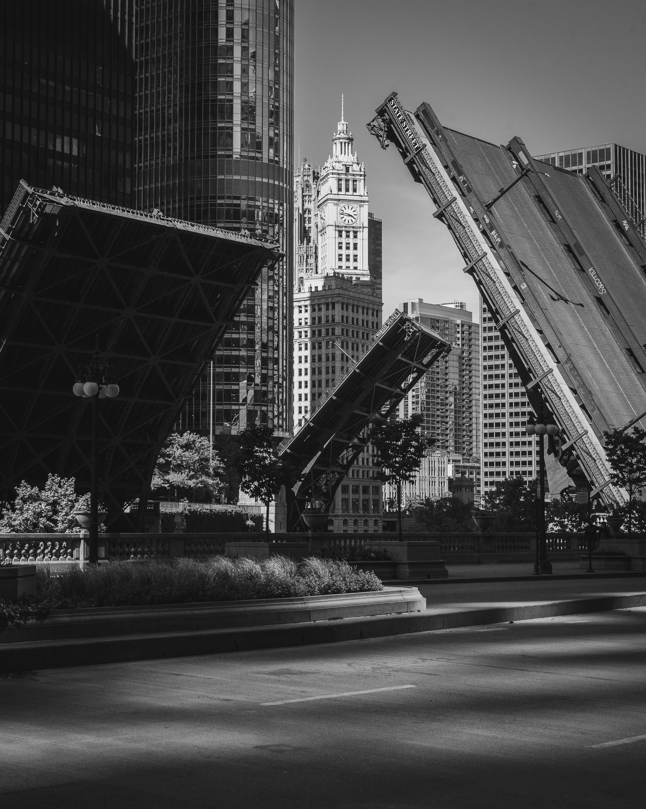
Did I jusst witness a MLK moment?
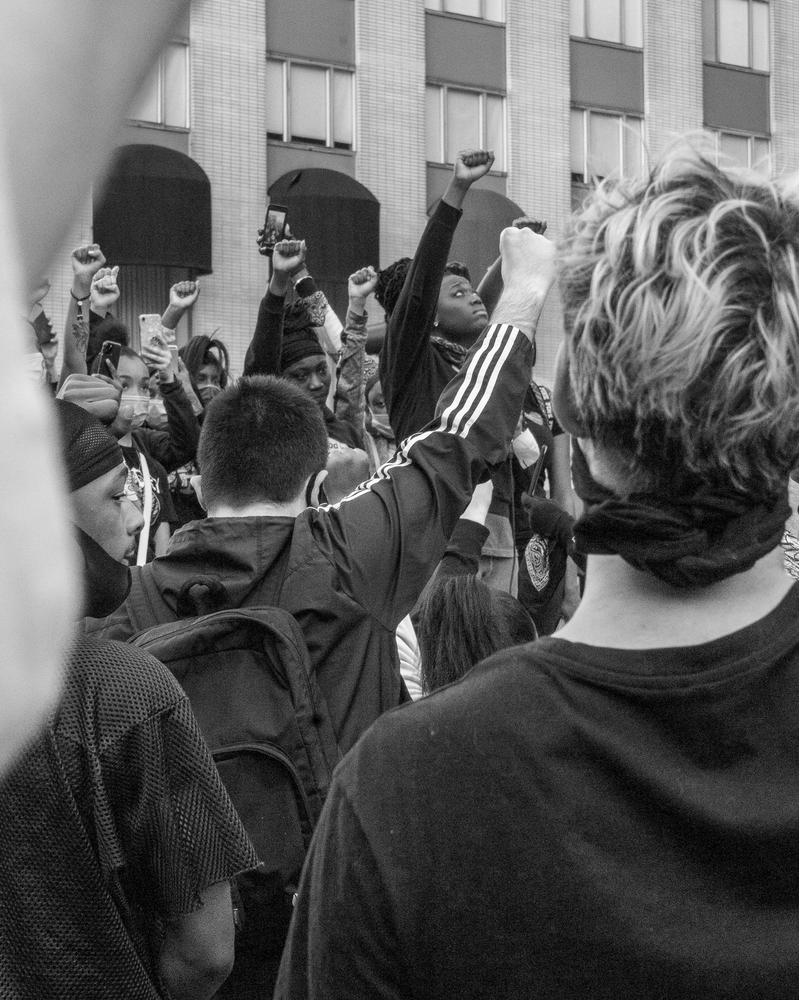
Unfortunately lil man, justice is a lie. Especially for us of color. Justice is a lie.
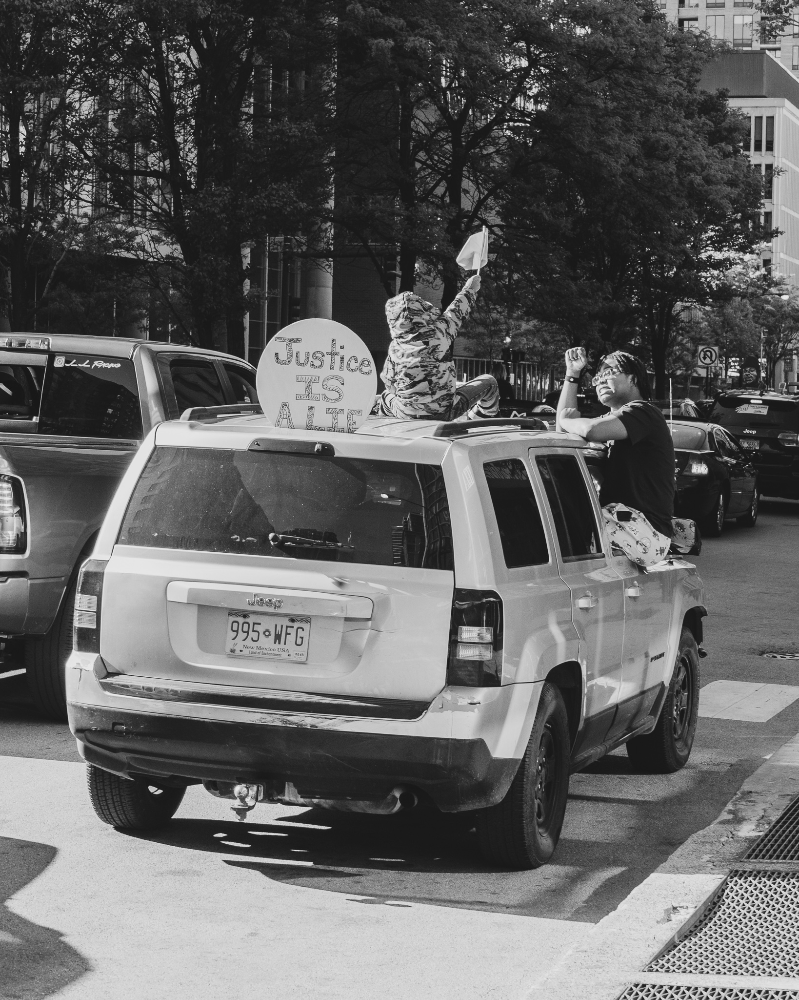
With Covid in the air you would think people were scared but the reality is the racism is a pandemic we can't get over. We are going to need plenty of booster shots to stop it.
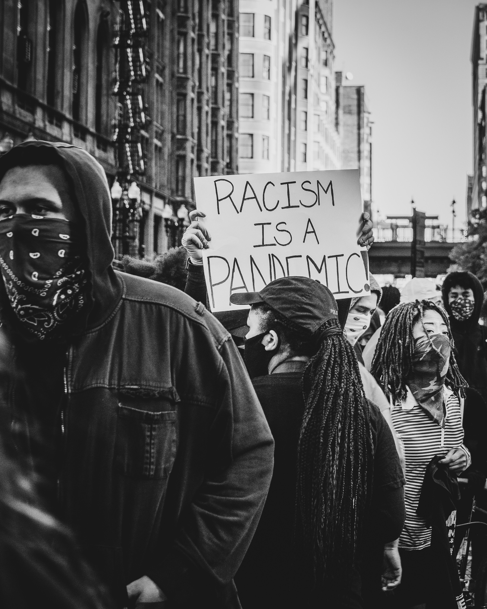
Please be our white ally.